When people hear minimal photography, they think of subtracting. But true minimalism is not fewer for fewer's sake. It lets the important thing be seen.
In an age of endless information and noise, we need clean images more than ever: photos that you read without effort, and that calm you at a glance. Minimalist landscape photography is that window. It does not pile up, and it is not crowded. It keeps only the part that moves you, and says softly: look, this is enough.
A tree in snow, a shoreline between sea and sky, a far mountain under a lone cloud. These images move us not because they are complex, but because they leave room for feeling to grow.
In the end, minimalist landscape photography is not a technique. It is a way of seeing. It makes you slow down, and look and think a little longer before you press the shutter. It teaches you to value the empty, to trust the few, and to believe that space is not blank, and quiet is not silence.
These 10 tips are not deep theory. They are lessons from long shooting. Whether you just picked up a camera or have shot for a while, I hope they give you a start.
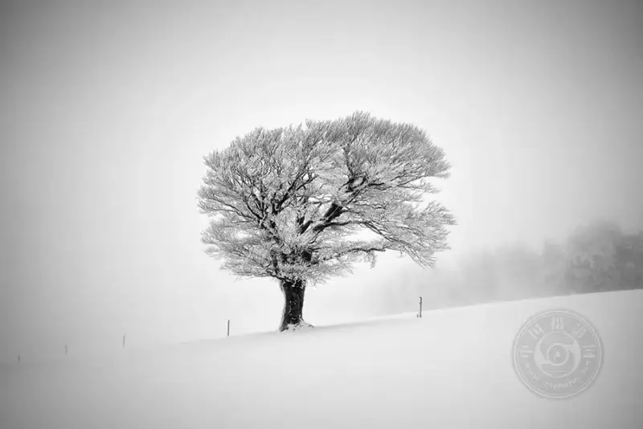
1. One photo tells one thing
The soul of minimal photography is one. One tree, one rock, one bird is enough.
You may think: won't one thing be too plain? The opposite is true. When there is one subject, the viewer's attention is held firmly, and the feeling stays focused. That tree can be lonely, or strong. That rock can be silent, or powerful. It depends on where you place it and the light you use.
Look for large, clean backgrounds: snow, desert, a lake, the sky. They naturally set off a single subject. Also watch the space around the subject. Those areas with nothing often carry more feeling than the subject itself.
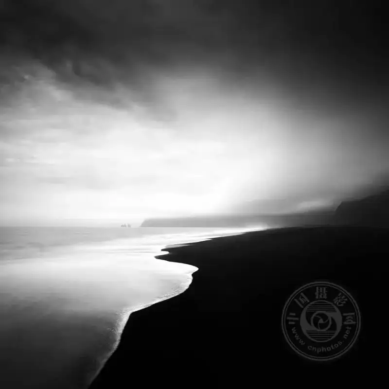
2. Negative space is not blank. It is breath.
Negative space is the most valuable tool in minimal photography. It gives the eyes a place to rest, and the feeling a place to echo.
Think of a tree in the center of the frame, and a tree tucked in a corner, surrounded by a large field of snow. They feel totally different. The latter makes you feel the tree is lonely, and that is the space speaking.
When you shoot, hold back the urge to fill the frame. Boldly let the sky, water, or fog take most of the area. Remember: the empty part is not wasted. It is the breathing room you leave for the photo.
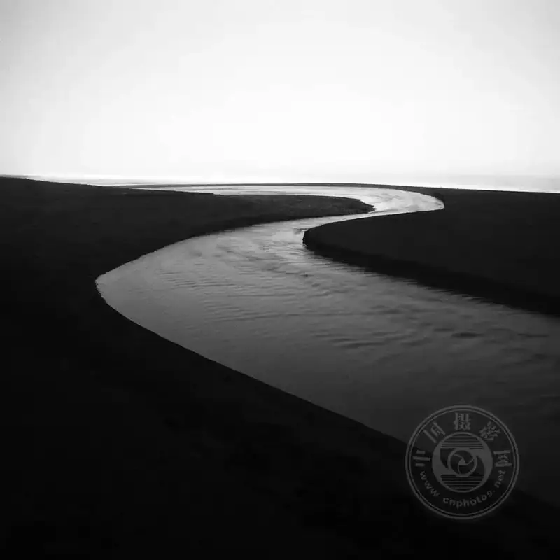
3. The simpler the background, the stronger the photo
A minimal photo fears a messy background most. If the background is messy, the subject can be as beautiful as it likes.
So look for whole, solid backgrounds: snow, fog, desert, calm water. They are like a clean white sheet. Whatever you place on them becomes the focus.
When you shoot, change angles often. Go lower and let the sky be the background. Use shallow depth of field to blur the messy details. In short, do not let the background steal from the subject. The cleaner the background, the more confident the photo.
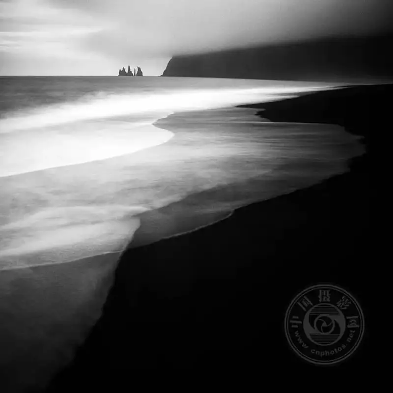
4. Light is the hidden director of a minimal photo
The fewer the elements, the more light matters.
The same tree in warm sunrise light and in harsh noon light is two different photos. Soft morning light brings out fine layers. Backlight draws a clean silhouette. Side light wakes up the texture of the ground.
When you shoot minimal landscapes, do not rush the shutter. Wait for the light. Come back to the same place at a different time. When the light changes, the feeling changes. Light is your best partner. Do not waste it.
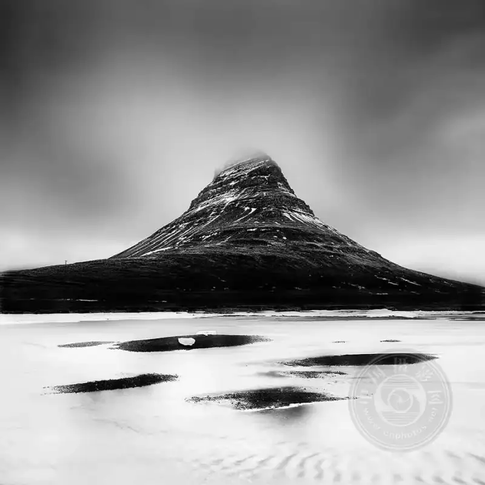
5. Compose on purpose, not by chance
A minimal photo looks simple, but the place of every line and every point was thought through.
The rule of thirds, leading lines, and symmetry still work. Where you put the horizon, and whether the tree is left or right, changes how the viewer feels. Geometry also helps. Curves and diagonals make the frame more interesting without adding clutter.
In short, do not let anything in the frame sit by chance. Every element needs its place and reason. In minimal work, you do not win by having more material. You win by arranging it well.
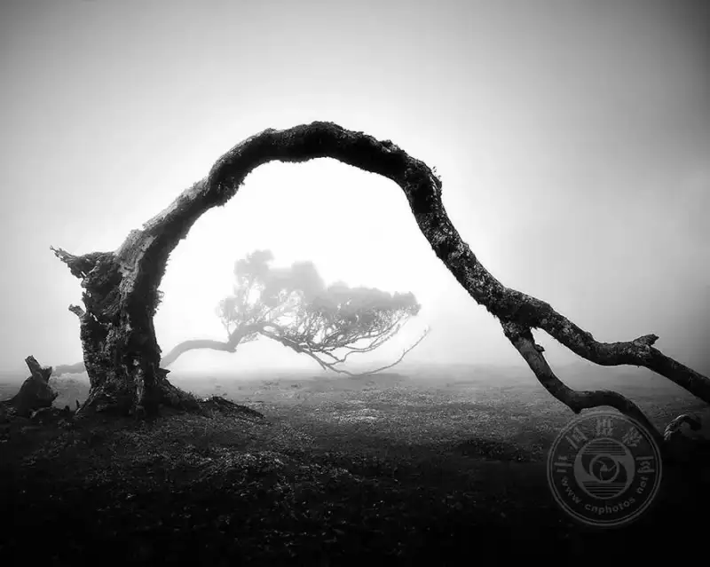
6. Less color moves more
When there is too much color, the frame gets noisy. Minimal photography favors quiet colors: soft pastels, earth tones, black white and gray, or a single cool tone.
The easiest way to control color is to choose your time: early morning, dusk, or fog, when the light softens the colors for you. In post, you can lower saturation a little and unify the tone, but do not overdo it. Color supports the feeling. It is not there to grab the eye.
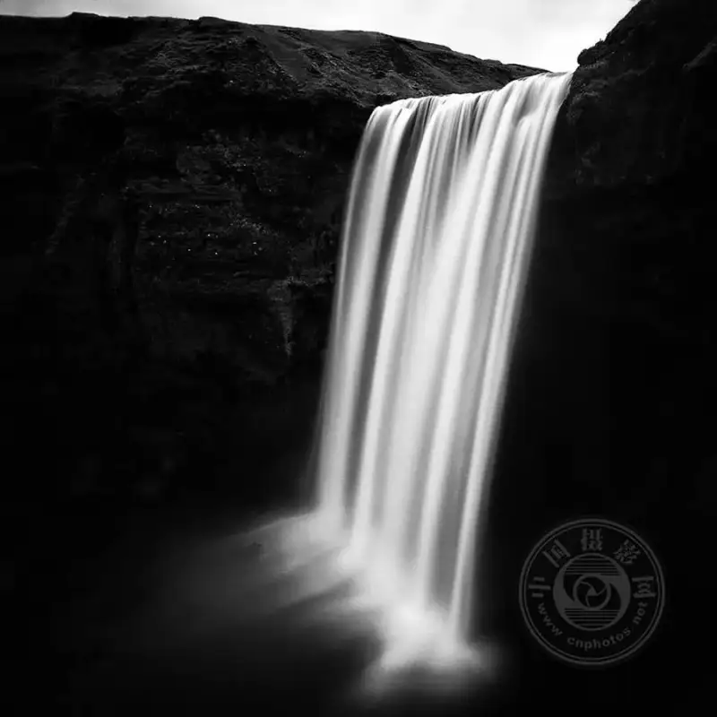
7. Patience brings the good photo
Minimal landscapes rarely come to you. They hide in the change of light, in the moment fog lifts, and in the instant the wind stops.
Stay a little longer and look a little longer. When you slow down, you see what others miss: a slanted tree shadow, fine ripples on water, a cloud moving slowly over a hill.
Observe not only with your eyes, but with your ears, your skin, and your instinct. When you truly go quiet, the landscape shows you its simplest and strongest side.
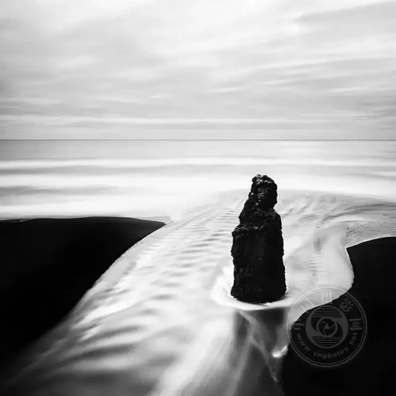
8. Bad weather is the best helper for minimal photography
Many people pack up when the sky turns gray, fog rolls in, or it rains. But this bad weather is exactly what suits minimal shooting.
Fog hides the messy details and makes the frame soft and whole. Snow covers a complex scene with white. An overcast sky is like a huge softbox: even light, no hard shadows.
Next time there is fog or light snow, do not hide. Take your camera and walk. You will find that ordinary scenes, under the filter of the weather, suddenly become quiet and full of story.
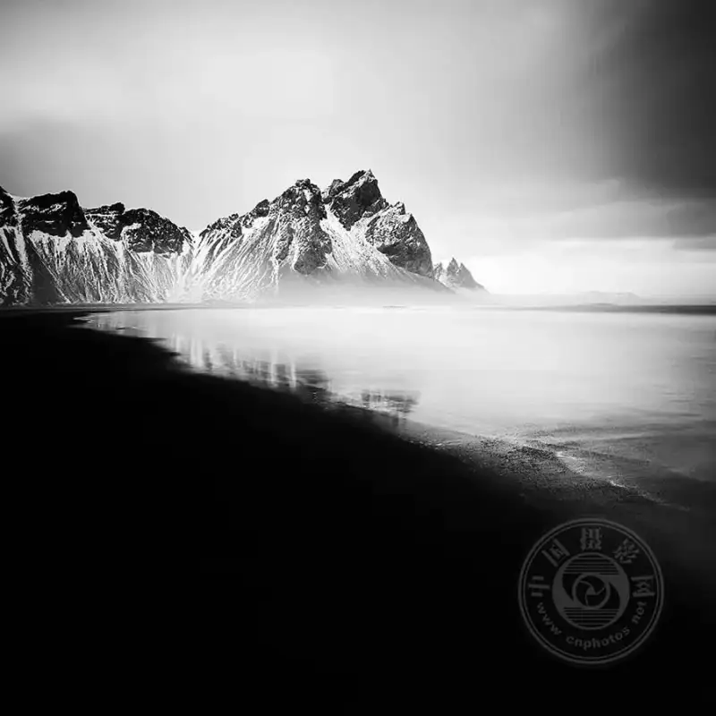
9. Think before the shutter, and touch less in post
Half the skill of minimal photography happens before the shutter.
Do not expect post to save a careless shot. Spend more time in front of the camera. Think through the composition, the light, and the subject before you shoot. The negative you get is already clean, and post only needs a light touch.
In post, do not add many effects, and do not push contrast or saturation too hard. Keep the frame clean and quiet. Lift the shadows a little and nudge the color temperature, to polish the mood of the original. Remember: post adds flowers to brocade. It does not rescue a failing shot.
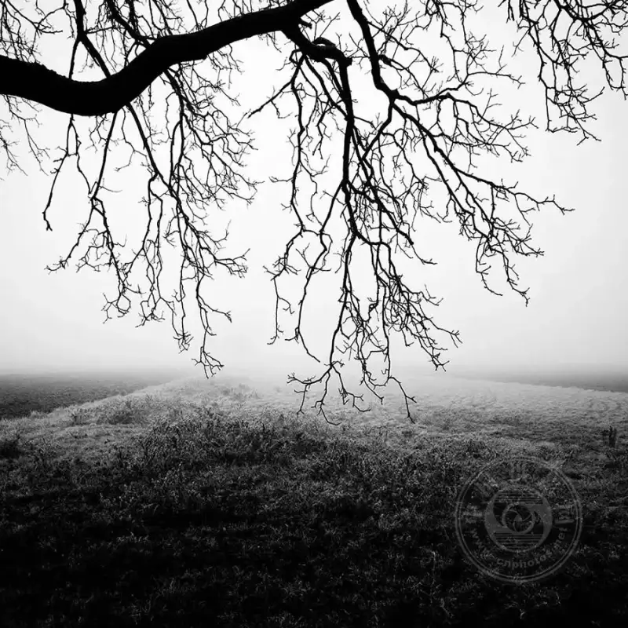
10. The simpler, the more story it tells
The last and most important point: minimalism is never empty. It says more with less.
That lone tree may tell of strength. That empty beach may tell of loneliness. That slow ridge line may tell of time. A minimal photo does not rush to tell you everything. It leaves space for the viewer to fill, to think, and to feel.
So when you shoot, ask yourself: what do I want people to feel? Then remove everything that has nothing to do with that feeling. What remains is the story you want to tell.
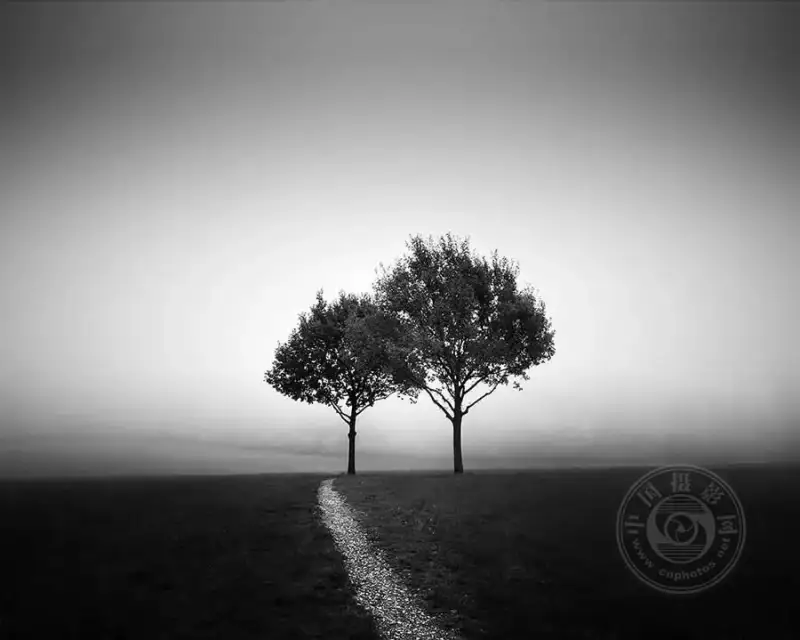
In closing
In the end, minimalist landscape photography is not a style. It is a way of seeing the world.
It makes us believe that beauty does not need display, and strength does not need noise. In an age where everything adds, the courage to subtract is rarer.
I hope these 10 tips help you take photos that move you. I also hope, along the way, you meet a quieter and sharper version of yourself.
After all, the secret of a good photo is never in the camera. It is in the moment you are willing to stop for it.
Photo (c) Michael Schlegel